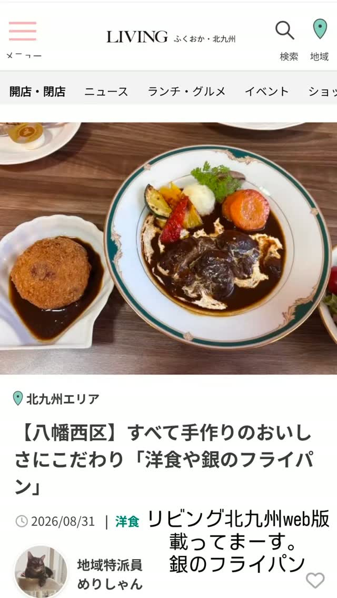
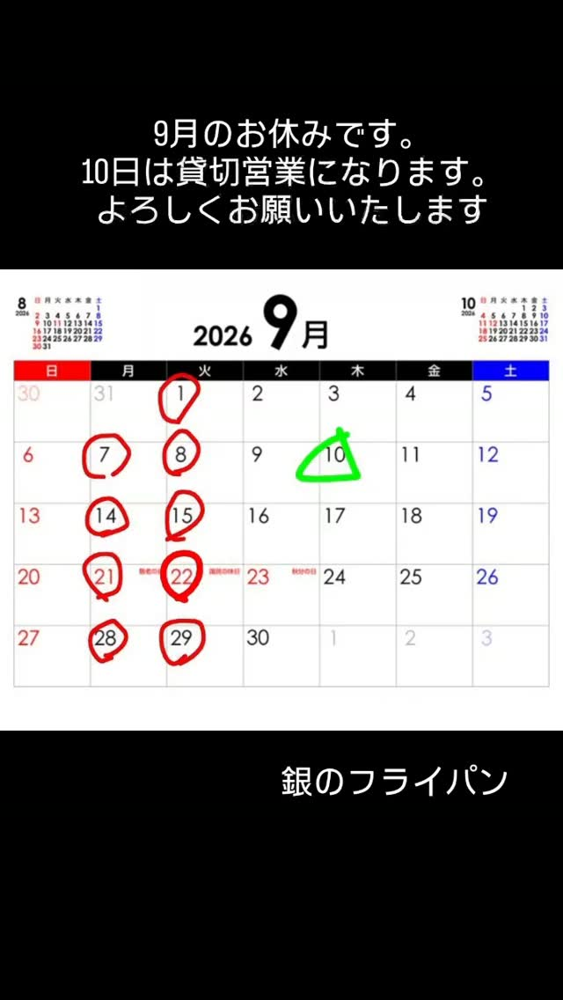

YOSHOKU IN KŌBAI
ひと皿ずつ、
まじめに手作り。
ゆっくり煮込むシチューも、香ばしく揚げるフライも。小さな厨房から、できたての洋食をお届けします。
- OPEN
- 11:30–15:00
- LAST ORDER
- 14:00
- HOLIDAY
- Instagramでご案内
OUR KITCHEN
懐かしくて、少し特別な洋食。
料理は一つひとつ丁寧に手作り。住宅街の静かな丘にある小さなお店で、ジャズとともに、ゆっくりランチをお楽しみください。
2026年4月12日、北九州市八幡西区紅梅にオープン。
SIGNATURE DISHES
銀のフライパンの洋食
和牛のステーキ、定番になったオムライス。お店のInstagramでご案内しているランチメニューです。

Instagramのメニュー投稿 ↗

DINNER NEWS
10月からの
夜営業について
10月から、夜はコース料理のみのご提供となります。2日前までのご予約で営業いたします。コースの内容は決まり次第Instagramでご案内します。
日々の料理をInstagramで見る ↗PRESS & REVIEWS
掲載記事・口コミ
お店を紹介していただいた記事と、グルメサイトの店舗ページをご案内します。

リビングふくおか・北九州Web
手作りの洋食と、お店の雰囲気を取材していただきました。
紹介記事を読む ↗開店閉店.com
紅梅でのオープン情報が掲載されました。
開店記事を読む ↗食べログ
お客様の口コミやお料理の写真、店舗情報をご覧いただけます。
食べログを見る ↗ヒトサラ
住所や営業時間など、お店の基本情報が掲載されています。
店舗ページを見る ↗リンク先の情報は掲載時点のものです。最新の営業案内はInstagramをご確認ください。
VISIT US
店舗案内
- 住所
- 〒806-0011
福岡県北九州市八幡西区紅梅4-4-2
海の見えそうな丘 103号 - 営業時間
- 11:30–15:00（L.O. 14:00）
- 夜のご利用
- 10月からコース料理のみ・2日前までの予約制。詳細はInstagramをご確認ください。
- 定休日
- Instagramでご確認ください
- お席
- 12席（カウンター4席・テーブル8席）
- 駐車場
- 共用駐車場あり
- 最寄り駅
- JR黒崎駅

2026年9月の営業案内最新の店休日はInstagramへ。